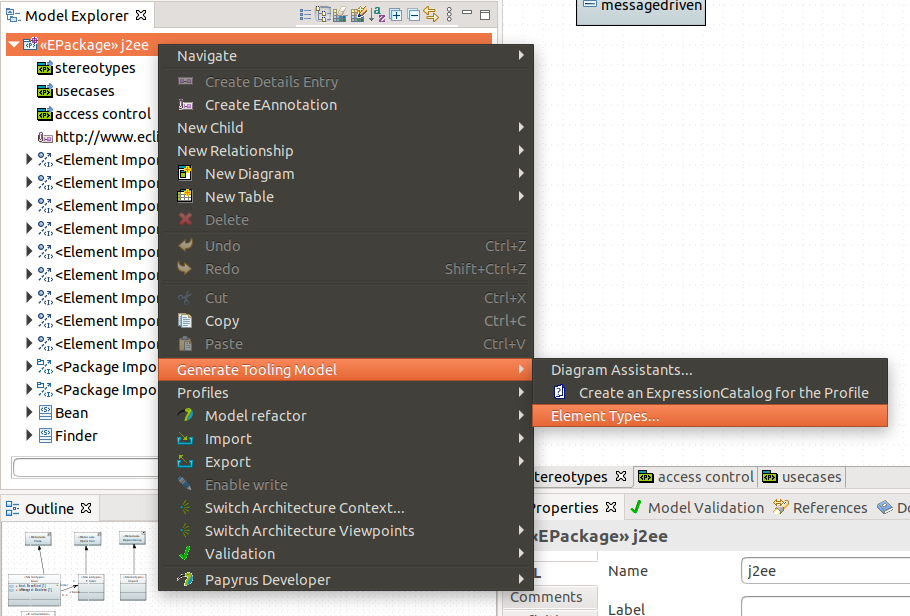
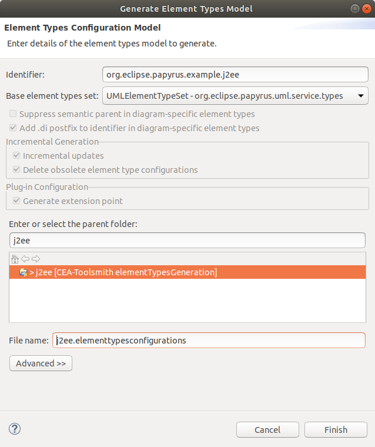
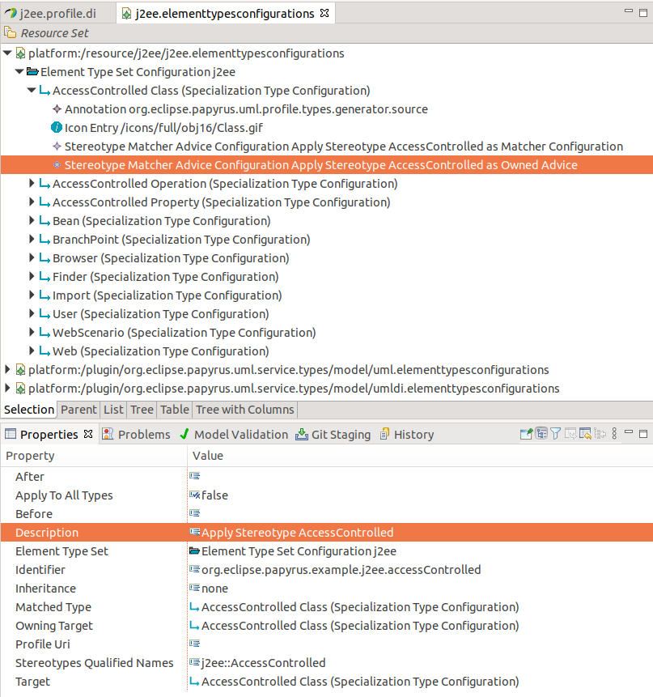
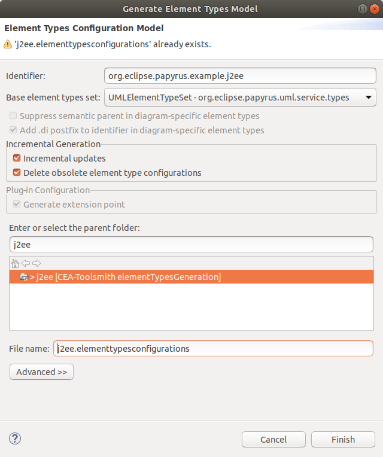

Element Type Configurations for UML Profiles
For detailed information about the Element Types framework of GMF/Papyrus, see the Toolsmiths/ElementTypeConfigurationsFramework section.
This section focuses on how Element Type Configuration models can be generated from a Profile, as well as maintained when the Profile evolves.
The Element Type Configurations model for UML Profiles
The Element Type model generated from a UML Profile contains one SpecializationTypeConfiguration per Stereotype Extension, extending the UML Metamodel Type corresponding to the extended UML Metaclass. Each Specialization Type contains a Stereotype Matcher to identify the existing Stereotyped Elements, and an Advice to automatically apply the Stereotype on creation. Further customization (Such as setting some values during the creation of the Stereotyped Element, or attaching custom Advices) must be done manually.
Generating the Model
The Element Type Configuration model can be generated by opening the profile in the Papyrus editor. From the Model Explorer view, right click on the Profile, and select Generate Tooling Model > Element Types...

This opens the Model Generation wizard:

In this wizard, you can select:
- The Identifier: used to prefix all identifiers in the Types model
- Base element types set: the element types to extend. For a Profile, this is typically the UMLElementTypeSet from the org.eclipse.papyrus.uml.service.types plug-in, which contains all the default types for UML. You may also choose the UMLDIElementTypeSet to generate specialized types for all visual (diagram) elements. This guide focuses on the default value, which is UMLElementTypeSet.
- Parent folder: Where the Element Type Configuration Model will be generated. It is recommended to select a folder inside of an Eclipse plug-in Project. In that case, the Generator will also configure the plug-in, to define e.g. all required plug-in dependencies, extension points, etc.
- File name: the file name for the generated model. The default value is usually a good choice.
The options related to the incremental generation will be discussed in the next section.
When pressing finish, the model will be generated at the selected location, and will contain one Specialization Type Configuration for each Stereotype Extension:

Incremental Generation
Since the generated model only contains the simple structure for your Profile Types (Which may or may not be sufficient), it is often required to add custom Advices to the generated Specialization Types. If the profile evolves (Usually with new Stereotypes), the generator can be used to update an existing Element Types Model to include the Specialization Types related to these new Stereotypes, without affecting the existing Types. This way, the user changes will be preserved.
Incremental Generation is the default behavior when generating the Element Types and selecting a target Folder/Model that already exists:

The following profile changes will be considered by the incremental generator:
- New Stereotype or Extension: A new Specialization Type Configuration will be generated for each new Stereotype Extension (Either a new Stereotype with some Extensions, or an existing Stereotype with new Extensions).
- Removed Stereotype or Extension: All Specialization Type Configurations generated from a Stereotype or an Extension that has been deleted will be removed from the model, if "Removed Deleted Types" is selected. Uncheck this option if you wish to preserve the Specialization Types (Note that the resulting model will then be invalid, and will need to be fixed manually. This may be a safer choice if you made heavy customizations to the generated model; but is not recommended otherwise).
- Renamed Stereotype: Existing Specialization Types corresponding to Stereotypes that have been renamed will be updated to use the new (qualified) name. This includes Stereotype Matcher, Apply Stereotype Advices, Specialization Type ID and Name. Custom advices will not be modified. Renamed Stereotypes are identified based on their URI, as defined in the generated Specialization Type Configuration 'Source' attribute.